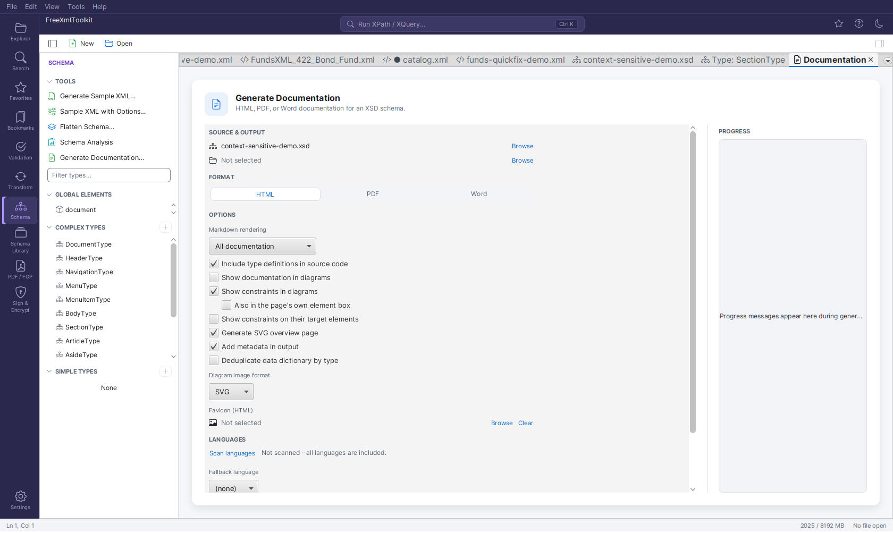

Generate schema documentation¶
Create professional documentation from your XSD file automatically.


Before you start¶
- An XSD open in the editor.
Output Formats¶
| Format | Description |
|---|---|
| HTML | Interactive web documentation with navigation |
| Word | Microsoft Word (.docx) document |
| PDF document using Apache FOP |
How to Generate Documentation¶
- Open your XSD file in the editor host
- Click Generate Documentation… in the Schema panel's TOOLS section (or pick it from the editor toolbar's Schema ▾ menu) - the generator opens as a tab in the editor area. The generator reads the saved schema file: if it has unsaved changes, you are asked to Save and Continue, Use Saved Version or Cancel
- Check SOURCE & OUTPUT: the active schema is pre-filled; choose the output folder (HTML) or file (PDF/Word)
- Select your output format (HTML, PDF, or Word) and the diagram format (SVG, PNG, or JPG)
- Configure options (PDF and Word add page-layout and content options)
- Click Generate - the PROGRESS log streams the pipeline's messages live, and the run can be cancelled
- Open the result automatically or from the output location
Tip
Generation works from the schema's last-saved version on disk so that relative
xs:include / xs:import references resolve correctly - save the XSD first to document
your latest edits. Remote imports are resolved through the Schema Library, XML catalogs
and the schema cache (see
Automatic Resolution of Imported Schemas);
the generator never modifies your schema file or writes into its folder.
Generation Options¶
| Option | Description |
|---|---|
| Markdown rendering | All documentation (default), Per node (@markdown), or Off - see below |
| Include type definitions in source code | Show the type's XSD source on the detail pages (on by default) |
| Show documentation in diagrams | Print the documentation text inside the SVG element boxes (off by default) |
| Show constraints in diagrams | List keys, unique and keyref constraints and assertions inside the element boxes, as in the Graphic view: a coloured label (KEY / UNIQ / REF / ASSERT) and the text, at most four lines plus "+N more", full details as tooltip; assertions include those of derived and base types (on by default, also for PDF and Word) |
| Also in the page's own element box | Off: only the child boxes list constraints; the page's own ones are in the sections below the diagram (off by default) |
| Show constraints on their target elements | Also list a key, unique or keyref on the element its field points to (e.g. BenchmarkID for a key on Fund). It shows as a row in that element's diagram box (with Show constraints in diagrams on) and in a Referenced by Identity Constraints section of its page, linked to the element that declares it. An attribute field shows on the attribute's element (off by default) |
| Generate SVG overview page | Interactive full-schema SVG (on by default) |
| Add metadata in output | Generator name, date and schema information in the output (on by default) |
| Deduplicate data dictionary by type | List each type once in the Data Dictionary instead of per usage |
| Image format | SVG (default), PNG or JPG for the diagrams |
| Favicon (HTML) | A custom icon file for the HTML output |
| Open the generated documentation after creation | Opens index.html (HTML) or the generated file in your system viewer |
When you pick PDF or Word, a PDF OPTIONS / WORD OPTIONS section appears below the general options:
| Option | Formats | Description |
|---|---|---|
| Page size | PDF, Word | A4 (default), Letter or Legal; the PDF also offers A3 |
| Orientation | PDF, Word | Portrait (default) or Landscape |
| Cover page | PDF, Word | A title page in front of the document (off by default) |
| Table of contents | PDF, Word | A table of contents listing the chapters (on by default) |
| Data dictionary | PDF, Word | The table of every element and attribute path with its type, cardinality and description (on by default) |
| Schema diagram | PDF, Word | A chapter with the diagram of the root element; the PDF adds an overview of the whole schema for schemas up to 400 elements (on by default) |
| Element diagrams | PDF, Word | A diagram in every element and type section (on by default) |
| Element reference | PDF, Word | One section per declaration (default), Every occurrence or Off - see Element reference below |
| XSD source in each section | PDF, Word | Shows the XSD source of every element and type in its section (off by default; makes the document considerably longer) |
| Color scheme | The accent colour of the document: Blue (default), Green, Purple, Grayscale or Professional | |
| Watermark | None (default), Draft, Confidential or Internal Use Only, printed across every page | |
| Page numbers | Page numbers in the footer (on by default) | |
| PDF bookmarks | A bookmark tree for the chapters and every element and type section (on by default) |
Element reference (PDF and Word)¶
The PDF and the Word document are built from the same chapters, each one switched by the options above: cover page, table of contents, Schema Overview, Namespace Overview, Schema Diagram, Complex Types, Simple Types, Data Dictionary, Element Reference and Index. The schema diagram starts at the schema's root element. The index lists every element and attribute with its path (without sequence/choice containers) and says which of the two it is. Restrictions are written as plain text (for example Base: xs:string; MaxLength: 256), and long paths, restrictions and descriptions wrap in their column instead of being cut off. Type usage counts include derived types.
The PDF and the Word document have an Element Reference: one section per element and attribute with what the HTML detail page shows:
- the diagram (all levels), with Element diagrams on;
- the properties: type, cardinality or use, namespace, default / fixed / nillable;
- the documentation in every selected language;
- the restrictions with their values, including the full enumeration list;
- the children and attributes;
- identity constraints (selector, fields, refers to), assertions, type alternatives, wildcards and open content;
- appinfo.
One section per declaration describes an element once, however many paths its type is used at. The section lists the other paths, and they link to it. Every occurrence gives each path its own section, as the HTML documentation does; for large schemas this makes the PDF much longer.
Paths in the data dictionary, names in the index and in the children tables link to their section, and the PDF bookmarks list every section under Element Reference.
The Complex Types and Simple Types chapters list every global type in a table, then give each type its own section:
- documentation;
- base and derivation;
- the content model of a complex type: diagram plus children and attributes;
- the facets of a simple type with their values, and each enumeration value with its documentation;
- assertions;
- Used In: the elements and attributes of this type, with links;
- the types derived from it.
Type names link to these sections wherever they appear: overview tables, data dictionary, element properties, children tables and index.
Deduplicate data dictionary by type also applies to PDF and Word: each named type is listed once in the data dictionary.
The Word document has the same element and type sections as the PDF:
- each section is a bookmark;
- paths and types in the data dictionary, names in the index, the type tables, children tables and Used In lists are links to it;
- chapters use real Word headings (Heading 1 to 3), so the table of contents, the navigation pane and the outline view work. Section headings appear in the navigation pane, while the table of contents lists the chapters (Word fills it when the document is opened);
- the Namespace Overview says what each namespace is and lists the imports and includes;
- diagrams are embedded as sharp PNG images in their own proportions, fitted to the text width.
More in the PDF:
- Diagrams follow Diagram image format. With SVG (the default) they are vector graphics: sharp at any zoom and searchable. PNG and JPG embed images.
- The Namespace Overview lists the prefixes the schema declares (target namespace, XML Schema, imported, declared), plus a table of its imports, includes, redefines and overrides with their locations.
- The Schema Diagram chapter adds an overview of the whole schema, as on the HTML overview page. Schemas with more than 400 elements get a note instead, because the overview would not be legible on one page.
- XSD source in each section (PDF and Word, off by default) shows the XSD source of every element and type. Leaf elements and attributes show a Sample value.
Markdown rendering¶
xs:documentation text can be rendered as Markdown, so **bold**, lists and links show up
formatted on the generated pages. The choice has three settings:
| Setting | Effect |
|---|---|
| All documentation (default) | Every node's documentation is rendered as Markdown, unless that node itself says @markdown is false |
Per node (@markdown) |
Only nodes whose annotation says @markdown is true are rendered - everything else, including nodes that say nothing, stays plain text |
| Off | Nothing is rendered, whatever the nodes say |
A node's own @markdown always beats the chosen setting - only Off is absolute. Where an
element and its type disagree, the element wins; the type's @markdown applies to every element
using it that does not state its own. The same rule drives the complexType, simpleType, attribute
and enumeration documentation on the generated type pages.
Documentation that is not rendered as Markdown appears literally: **bold** stays visible as
typed instead of being formatted. If you want text formatted, write Markdown and leave the
rendering on.
Unrendered text is HTML-escaped everywhere it appears in the generated HTML, so markup written
straight into xs:documentation shows as the tags themselves instead of being applied. The PDF,
Word and Excel outputs are unaffected: they flatten the documentation to plain text and drop the
markup as before.
Formatting is a feature of the HTML output. The PDF, Word and Excel outputs are plain text: the documentation is flattened for them, but paragraphs, list items and headings each keep their own line instead of running together.
The per-node switch lives in the schema itself and is edited in the Inspector's Markdown choice (Not set / Markdown / Plain text):
<xs:element name="Transaction">
<xs:annotation>
<xs:documentation>A **single** financial transaction.</xs:documentation>
<xs:appinfo source="@markdown">true</xs:appinfo>
</xs:annotation>
</xs:element>
Language Settings¶
For multi-language schemas, you can:
- Click Scan languages to detect the
xml:langvalues used in the schema - Untick the languages you do not want in the output
- Choose a fallback language for missing translations
De-selected languages are dropped everywhere: element detail pages, type pages, attribute and
enumeration documentation, the Data Dictionary (HTML and Excel), the search index, the SVG
diagrams and the Source Code snippets on the detail pages. Documentation without an xml:lang
attribute ("default") is always kept as a fallback. The schema files copied next to the
documentation are left untouched. Leaving every language ticked (or not scanning at all) includes
all of them.
Adding Technical Notes to Your Schema¶
You can add structured technical information directly in your XSD files:
Full tag reference
All supported tags, their semantics and examples are listed in the XsdDoc Tags reference.
The tag goes into the source attribute of an xs:appinfo, its value into the element's text
content.
Supported tags:
@since- When a feature was introduced@version- Version detail of the component@see- References to other elements (may occur several times)@deprecated- Mark elements as deprecated@markdown-true/false, whether this node's documentation is rendered as Markdown (see Markdown rendering){@link /path/to/element}- Create clickable links inside@seeand@deprecated
Example values are a separate block rather than a tag. They appear as Sample Data on the detail pages and also feed the sample-XML generator and IntelliSense.
Example in your XSD:
<xs:element name="Transaction">
<xs:annotation>
<!-- User-friendly documentation -->
<xs:documentation xml:lang="en">A single financial transaction.</xs:documentation>
<xs:documentation xml:lang="de">Eine einzelne Transaktion.</xs:documentation>
<!-- Technical notes for developers -->
<xs:appinfo source="@since">4.0.0</xs:appinfo>
<xs:appinfo source="@version">1.2</xs:appinfo>
<xs:appinfo source="@see">{@link /FundsXML4/ControlData}</xs:appinfo>
<xs:appinfo source="@deprecated">Use {@link /FundsXML4/NewTransaction} instead.</xs:appinfo>
<xs:appinfo source="@markdown">true</xs:appinfo>
<!-- Example values -->
<xs:appinfo>
<fxt:exampleValues xmlns:fxt="http://freexmltoolkit.org/xml-schema-extensions">
<fxt:example value="TRX-0815"/>
<fxt:example value="TRX-0816"/>
</fxt:exampleValues>
</xs:appinfo>
</xs:annotation>
</xs:element>
Older schemas keep working
The form that packs tag and value into the attribute alone -
<xs:appinfo source="@since 4.0.0"/>, used throughout FundsXML - is still read, and so is
altova:exampleValues. Both are rewritten into the form above the next time you save the
schema from the toolkit; the generated documentation is the same either way. An
altova:exampleValues block is only converted once you actually change the example values.
Next steps¶
- XsdDoc tags - tags for technical notes
- fxt-cli: transform and publish -
xsd-docon the command line - Schema analysis